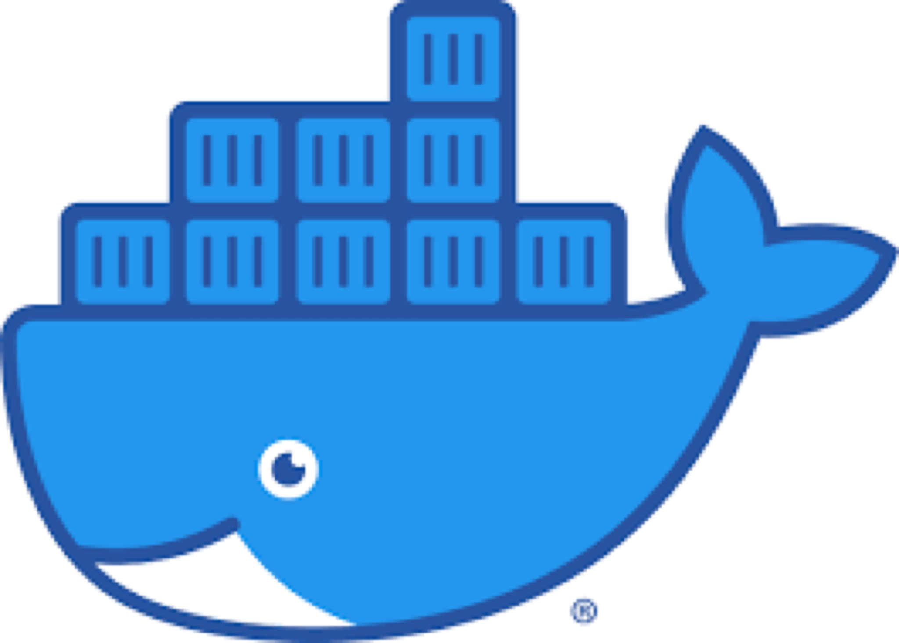
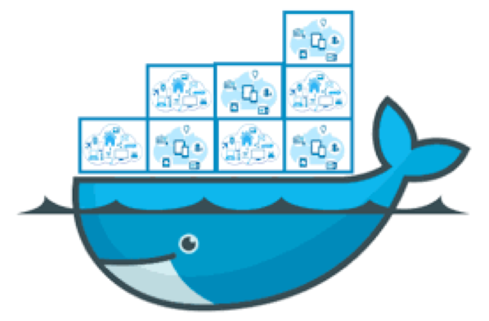
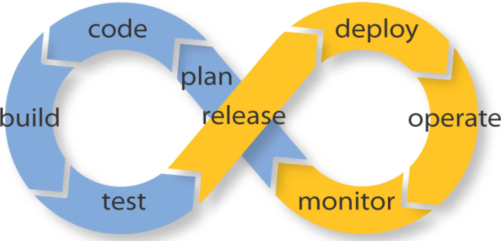
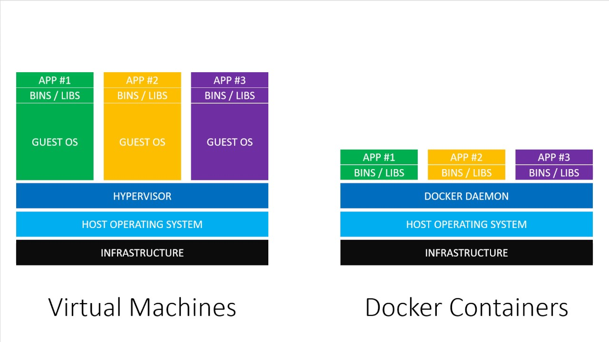
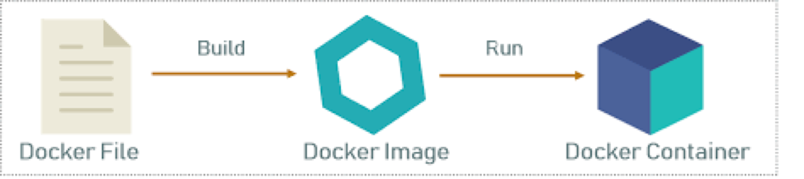
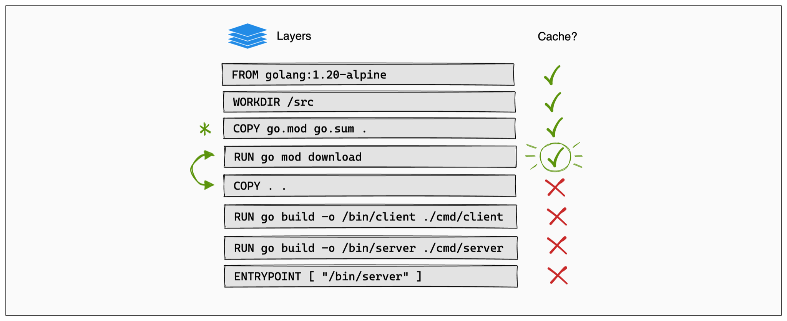

Introduction to Docker
Arnaud "Arhuman" Assad (arhuman@gmail.com)
Also on Linkedin - Github - Blog
Agenda
- What is docker?
- Why using docker?
- Getting started
- Resources and ecosystem
- Questions
What is Docker?
"Docker is an open platform for developing, shipping, and running applications. Docker enables you to separate your applications from your infrastructure so you can deliver software quickly. With Docker, you can manage your infrastructure in the same ways you manage your applications. -- Docker official site"
What is Docker?
The logo tells it all
A container based system
It's a real world analogy
A container based system (2)
- A standard format
- With standard tools
- Enabling efficient storage
- And easy delivery
A tool written in Golang
- Efficient (speed/memory)
- Stable
- Build for concurrency
Why using docker?
- Enable devops
- Simplify everybody's life
- Package an application
- Handle multiple environment
- Add a layer of Security(?)
- Optimize resources handling/provisioning
Essential tool of devops movement
Ease (almost) every devops step
- Code - Portable reproductible dev env
- Build - Reproductible simple automated build
- Test - Easy Continuous Integrations
- Release - Easy Continuous Deployment
- Deploy - Easy Continuous Deployment
- Operate - Normalized set of tools/commands
- Monitor - Built-in monitoring for automated scaling/remediation
Make programmer's life easier
- Portable reproductible dev/test env
- Easy build
- System independence (no security/upgrade constraint)
- Portability (works everywhere!)
- Tooling
Makes SysAdmin's life easier
- Security contained
- No more coupling with developer requirements
- Ease of administration
- Cheap multiple environment (test/staging/prod)
- Efficiency performance wise
- Portability (works everywhere!)
- Tooling
Makes CTO/CEO's life easier
- More Security
- Less frictions between dev/sysadmin
- Efficiency performance wise (money!)
- Scalability (support business growth)
- VC credibility (State of the art)
- Shorter Time to market
Fix: "Works on my machine!" issue
- Coder: Why is the system call failing?
- SysAdm: Why is there 2 JSON libraries?
- Everybody: What version is installed?
- Boss: Is it ok to deploy to production?
Cheaper, faster than VM
Getting Started
- Dockerfile
- Layer
- Image
- Container
- Hub/Registry
- docker-compose
Container basis
Dockerfile
FROM golang:1.21
# setup the working directory
WORKDIR /api
# install dependencies
COPY go.* /api/
RUN go mod download
# add source code
COPY . .
# build the source
RUN CGO_ENABLED=0 GOOS=linux GOFLAGS="-ldflags=-s -ldflags=-w" go build -o server ./cmd/api/
CMD ["/api/server"]
Dockerfile
# STEP 1: Build
FROM golang:1.21 as builder
# setup the working directory
WORKDIR /api
# install dependencies
COPY go.* /api/
RUN go mod download
# add source code
COPY . .
# build the source
RUN CGO_ENABLED=0 GOOS=linux GOFLAGS="-ldflags=-s -ldflags=-w" go build -o server ./cmd/api/
# STEP 2: app
FROM debian:bookworm-slim
ENV TZ=Europe/Zurich
# add ca-certificates in case you need them
RUN apt-get update && apt-get install ca-certificates jq -y && rm -rf /var/cache/apk/*
RUN groupadd devop && \
useradd -r --uid 1001 -g devop devop
# set working directory
RUN mkdir -p /home/devop/data
WORKDIR /home/devop
# copy the binary from builder
COPY --from=builder /api/server /home/devop/server
COPY assets/i18n/ /home/devop/i18n
COPY docs docs/
# Ownership so that these folders can be written when running in K8S
RUN chgrp -R 0 /home/devop && chmod -R g=u /home/devop
USER 1001
CMD ["/home/devop/server"]
Immutable layers for better caching
Building an image
docker build . # Build an image from the Dockerfile in current directory
[+] Building 4.8s (24/24) FINISHED
=> [internal] load .dockerignore 0.0s
=> => transferring context: 45B 0.0s
=> [internal] load build definition from Dockerfile 0.0s
=> => transferring dockerfile: 1.09kB 0.0s
=> [internal] load metadata for docker.io/library/golang:1.21-bookworm 4.6s
=> [internal] load metadata for docker.io/library/golang:1.21 4.6s
=> [internal] load build context 0.0s
=> => transferring context: 532.92kB 0.0s
=> [builder 1/8] FROM docker.io/library/golang:1.21@sha256:57bf74a970b68b10fe005f17f550554406d9b696d10b29f1a4bdc8cae37fd063 0.0s
=> => resolve docker.io/library/golang:1.21@sha256:57bf74a970b68b10fe005f17f550554406d9b696d10b29f1a4bdc8cae37fd063 0.0s
=> [stage-1 1/10] FROM docker.io/library/golang:1.21-bookworm@sha256:85aacbed94a248f792beb89198649ddbc730649054b397f8d689e9c4c4cceab7 0.0s
=> => resolve docker.io/library/golang:1.21-bookworm@sha256:85aacbed94a248f792beb89198649ddbc730649054b397f8d689e9c4c4cceab7 0.0s
=> CACHED [stage-1 2/10] RUN apt-get update && apt-get install ca-certificates jq -y && rm -rf /var/cache/apk/* 0.0s
=> CACHED [stage-1 3/10] RUN groupadd devop && useradd -r --uid 1001 -g devop devop 0.0s
=> CACHED [stage-1 4/10] RUN mkdir -p /home/devop/data 0.0s
=> CACHED [stage-1 6/10] WORKDIR /home/devop 0.0s
=> CACHED [builder 2/8] WORKDIR /api 0.0s
=> CACHED [builder 3/8] COPY go.* /api/ 0.0s
=> CACHED [builder 4/8] RUN go mod download 0.0s
=> CACHED [builder 5/8] COPY cmd cmd/ 0.0s
=> CACHED [builder 6/8] COPY internal internal/ 0.0s
=> CACHED [builder 7/8] COPY docs docs/ 0.0s
=> CACHED [builder 8/8] RUN CGO_ENABLED=0 GOOS=linux GOFLAGS="-ldflags=-s -ldflags=-w" go build -o server ./cmd/api/ 0.0s
=> CACHED [stage-1 7/10] COPY --from=builder /api/server /home/devop/server 0.0s
=> CACHED [stage-1 8/10] COPY assets/i18n/ /home/devop/i18n 0.0s
=> CACHED [stage-1 9/10] COPY docs docs/ 0.0s
=> CACHED [stage-1 10/10] RUN chgrp -R 0 /home/devop && chmod -R g=u /home/devop 0.0s
=> exporting to image 0.0s
=> => exporting layers 0.0s
=> => writing image sha256:f6a049d275ee3a5ffb2b9ea03bb5c9f026575750cc48d6c03c3eb700416213fb
Running/stopping a container
# Run a container from the hash of the previously built image
docker run f6a049d275ee3a5ffb2b9ea03bb5c9f026575750cc48d6c03c3eb700416213fb
# Run a container from an image (automagically pulled from docker hub/registry)
docker run hello-world
# Run a container from a mysql:8.2.0 image
docker run -e MYSQL_ROOT_PASSWORD=my-secret-pw -d mysql:8.2.0
# Run a golang:1.19 compiler with the current directory mounted
docker run --rm -it -v $PWD:/app golang:19
# Stop a container
docker stop f6a049d275ee3a5ffb
# Stop a container by name
docker stop mysql_1
Docker-compose.yml
version: '3'
services:
db:
image: mysql:5.7
ports:
- "3308:3306"
volumes:
- './data/db:/data/db'
- './data/mysql:/var/lib/mysql'
restart: always
environment:
MYSQL_ROOT_PASSWORD: password
MYSQL_DATABASE: MyDB
MYSQL_USER: myuser
MYSQL_PASSWORD: mypassword
adminer:
image: adminer
restart: always
ports:
- 8088:8080
Useful commands
# List image
docker image ls
# List container
docker ps
# Get into a container
docker exec -it containername bash
# Copy from a container
docker cp containername:path .
# Get Memory/CPU/Net/Disk information about running containers
docker stats
# Clean useless layers/containers/images
docker system prune
# Start all services (from docker-compose.yml)
docker-compose up -d
# Get information about current services (from docker-compose.yml)
docker-compose ps
# Stop all services (from docker-compose.yml)
docker-compose stop
# Get logs from all services (from docker-compose.yml)
docker-compose logs -f
Ecosystem

Resources
Demo time

Thanks
Questions ?
Don't hesitate to join my network on Linkedin